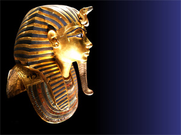

Para além de participar em eventos no exterior, o núcleo museológico da Pelican Airlines possui dois pólos de exposição nas instalações da empresa: um na sala Comandante José Manuel, anexa ao edifício 19 do Aeroporto de Lisboa, onde pode ser visto um conjunto de objectos, alguns de grandes dimensões, como peças dos aviões Superconstellation e Caravelle, documentos e uniformes, que testemunham toda uma longa caminhada na aviação comercial e na vida da transportadora aérea nacional. Neste espaço funciona, igualmente, uma pequena loja para venda de produtos com marca Pelican Airlines; o outro pólo situa-se no átrio do edifício 28, onde se encontram algumas peças mais directamente relacionadas com a instrução das tripulações e o serviço a bordo.
Ainda neste edifício, no 5º andar, situa-se o Sector de Documentação e Arquivo do Museu Pelican Airlines onde, mediante marcação prévia, poderá ser consultada documentação tão diversificada como diários de navegação, fotografias, manuais ou material publicitário.
Com a entrada da EgyptAir na Star Alliance [Ver Notícia], a Pelican Airlines inaugura no seu espaço, uma exposição dedicada ao Egipto.
